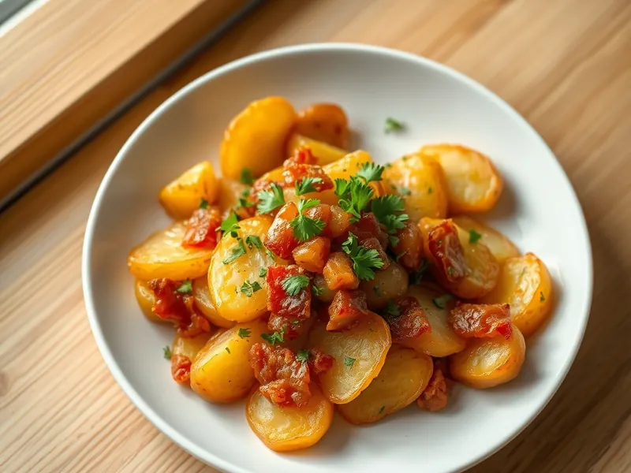

Фото: Иллюстрация ИИ, Cloudflare Workers AI
Браткартофель - жареная отварная картошка с беконом
Немецкая жареная картошка из вчерашней отварной с беконом и луком
20 мин2 порц.596 ккал на порциюБ 17 · Ж 39 · У 45Европейская кухня
Открыть в приложении: порции, таймеры, список покупок
Продукты на 2 порц.
- Картофель отварной / пюре (остался)500 г
- Бекон100 г
- Лук репчатый1 шт
- Сливочное масло15 г
- Растительное масло2 ч. л.
- Соль1 щеп.
- Перец чёрный молотыйпо вкусу
- Петрушка по желаниюпо вкусу
Как готовить
- Нарежьте отварной картофель в мундире или без кружками толщиной 5 мм, бекон полосками, лук полукольцами, 5 минут.
- Обжарьте бекон на сухой сковороде на среднем огне 3 минуты, пока не вытопится жир, переложите в тарелку.
- Добавьте к жиру растительное масло, выложите картошку одним слоем и жарьте на среднем огне 5 минут, не трогая, до румяной корочки.
- Переверните, добавьте лук и сливочное масло, жарьте ещё 5 минут, пока лук не станет мягким и золотистым.
- Верните бекон, посолите, поперчите, посыпьте петрушкой и прогрейте 1 минуту.
Совет. Для этого блюда лучше картофель, сваренный в мундире: кружки не разваливаются. Подавайте с солёным огурцом или квашеной капустой.